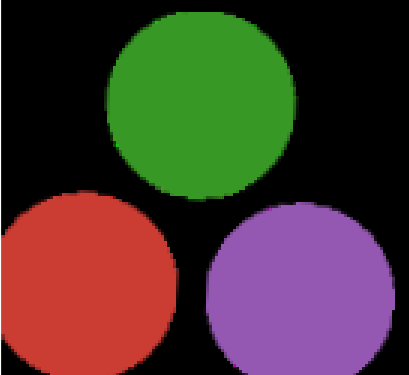

Rotation transforms
Rotation transforms are pretty straightforward - they rotate the image about a certain point through a certain angle θ. In this tutorial, I will train a Rotation matrix.
Importing the required libraries
Let us first import the required libraries.
julia> using DiffImages, ImageTransformations, CoordinateTransformations, ImageCore, FileIO, StaticArraysERROR: ArgumentError: Package ImageTransformations not found in current path: - Run `import Pkg; Pkg.add("ImageTransformations")` to install the ImageTransformations package.
Loading the image
For this tutorial, we shall use the Julia Dots logo.
img = load("julia_dots.png") .|> RGB{Float32}
img = imresize(img, ratio = 1/3)Initializing the transform
We shall rotate the image from the origin at an arbitrary angle θ. Let us create a function which initializes the matrix to a LinearMap.
\[\begin{bmatrix} \cos{\theta} & \sin{\theta}\\ -\sin{\theta} & \cos{\theta} \end{bmatrix}\]
julia> m(θ) = LinearMap(SMatrix{2, 2, Float32, 4}([cos(θ) -sin(θ); sin(θ) cos(θ)]))m (generic function with 1 method)
Setting the target image
Let us set our target image to angle of π/6.
tgt = ImageTransformations.warp(img, m(π/6), axes(img), zero(eltype(img)))Setting the hyperparameters
Let us initialize the hyperparameters - the learning rate η, the total number of iterations num_iters we should train for, and the initial angle θ from where we should start training.
julia> η = 1e-61.0e-6julia> num_iters = 100100julia> θ = 0.05 # Starting from zero will get you stuck in a local minima, so start a bit off.0.05
Defining the criterion
Great! Now before we jump to the training loop, let us first define an Images-centric version of the mean squared error loss as our criterion.
julia> function image_mse(y, ŷ) l = map((x, y) -> (x - y), y, ŷ) l = mapreducec.(x->x^2, +, 0, l) l = sum(l) l endimage_mse (generic function with 1 method)
Training loop
Now that we are ready, let's get to train our matrix. Here we only have a single scalar parameter θ for training.
for i in 1:num_iters
∇θ, = Zygote.gradient(θ) do θ
out = ImageTransformations.warp(img, m(θ), axes(img), zero(eltype(img)))
out = image_mse(out, tgt)
out
end
out = ImageTransformations.warp(img, m(θ), axes(img), zero(eltype(img)))
println("Iteration: $i Loss: $(image_mse(out, tgt))")
θ = θ + η*∇θ
endIteration: 1 Loss: 5878.8823
Iteration: 2 Loss: 5721.9014
Iteration: 3 Loss: 5499.8564
Iteration: 4 Loss: 5248.2817
Iteration: 5 Loss: 5001.5283
Iteration: 6 Loss: 4771.129
Iteration: 7 Loss: 4549.8735
Iteration: 8 Loss: 4342.372
Iteration: 9 Loss: 4145.0225
Iteration: 10 Loss: 3958.0752
Iteration: 11 Loss: 3778.5156
Iteration: 12 Loss: 3604.375
Iteration: 13 Loss: 3432.296
Iteration: 14 Loss: 3262.7085
Iteration: 15 Loss: 3099.788
...
Iteration: 90 Loss: 648.5401
Iteration: 91 Loss: 644.355
Iteration: 92 Loss: 640.3202
Iteration: 93 Loss: 636.3374
Iteration: 94 Loss: 632.3824
Iteration: 95 Loss: 628.35864
Iteration: 96 Loss: 623.8506
Iteration: 97 Loss: 619.3939
Iteration: 98 Loss: 615.4604
Iteration: 99 Loss: 611.1207
Iteration: 100 Loss: 606.791Results
A finely trained model will train the image like this -
θ = π/6 | θ = π/12 |
|---|---|
|  |  |